Reducing screen time through gamified, community-driven productivity experiences for Gen Z.
Timeline
Summer 2024
Hanwha Global Internship Program - Entrepreneurship Track
Skills
During the summer of 2024, I joined the Hanwha Global Internship Program’s entrepreneurship track. Hanwha is the 7th largest company in South Korea. The program was a rigorous and fast-paced experience designed to simulate the startup lifecycle from ideation to pitch. They brought together students with backgrounds in business, design, and software development to go through this cycle, together. Over nine weeks, our challenge was to create an innovative product that addressed a community-based real-world problem. The program concluded with an opportunity to present our solution to a panel of venture capitalists at San Francisco.
Our team created Tydes: a startup aimed at tackling one of Gen Z’s most prevalent challenges –screen time addiction–through creativity, community, and behavioral design.
Just a quick look at TikTok, and suddenly, two hours are gone. Does this sound familiar? But you might not realize how impactful this is.
Today, Gen Z spend an average of 7 hours and 11 minutes on their phones every day. Over a lifetime, this adds up to nearly 30 years spent on phones if they live to 100. This isn't just a productivity issue. It's a mental health crisis. Excessive screen time is known to be linked with anxiety, depression, and decreased social interactions.
Screen time is a very serious problem that needs to be addressed.
This is where Tydes comes in. We're not just another productivity app. We’re an effective community-based solution designed to help Gen Z reclaim those 30 years and refocus their energy on meaningful, offline experiences. By combining gamification, social accountability, and digital wellness features, we created a product that transforms reducing screen time from a chore into a rewarding daily pattern.
To define our addressable opportunity and inform product direction, we conducted market sizing and user segmentation with a focus on Gen Z, a demographic notably impacted by smartphone overuse. According to recent data, 98% of the 69.3 million Gen Z individuals in the U.S. own a smartphone. Among them, 45% acknowledge their smartphone addiction, and 26% are actively seeking tools to reduce their screen time.
In terms of market strategy, we applied a TAM-SAM-SOM framework to define our launch approach:
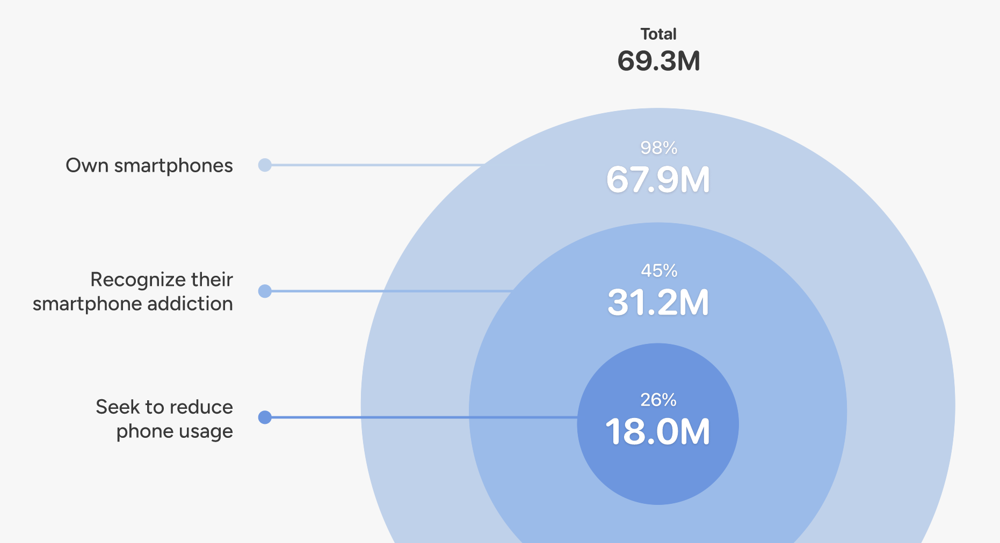
Our go-to-market strategy focuses on acquiring this high-intent segment first, and using community-based growth loops to encourage them to invite peers from the broader Gen Z population. By leveraging social influence and behavioral nudges, we aim to scale adoption within digitally fatigued student communities and peer networks.
This structured targeting informed both our product features (community feed, challenges) and messaging, ensuring we aligned with user pain points and intent signals from day one.
✅ Clear Visibility: Users appreciate being able to view their screen time records at a glance.
❌ Easy to Bypass: Just entering a passcode allows users to ignore limits, making it easy to continue using apps.
❌ Purely Informational: Since it only provides data, unmotivated users tend to ignore it.
✅ Engaging Gamification: Users enjoy growing their own forest, making focus time more fun.
❌ Only for Focused Use: It’s only used during focus sessions and doesn’t support ongoing engagement.
❌ Lack of Social Features: Many users stop using it due to isolation and lack of shared motivation.
❌ Motivation Drops Off: Early excitement fades as consistent motivation is hard to sustain.
The pain points we have identified from current designs are as follows.
Smartphones are addictive because they deliver instant dopamine hits. To compete with apps like TikTok and Instagram, productivity tools must also offer entertainment and interactivity. Without this, users quickly lose interest.
When quitting has no cost, users feel no accountability. Features like passcode overrides on screen time limits make it easy to bypass boundaries. This is why many users abandon productivity apps shortly after downloading them.
Getting users to open the app in the first place is a core challenge. Without regular prompts and motivation, users lose interest. Many apps fail to sustain user momentum toward screen time goals, making long-term use unlikely.
So Tydes addresses these gaps by focusing on 3 key pillars: fun, interactive, and motivational.
Before I introduce our solution, I wanted to share the concepts of Tydes to make it unique and approachable for Gen Z, our target users.
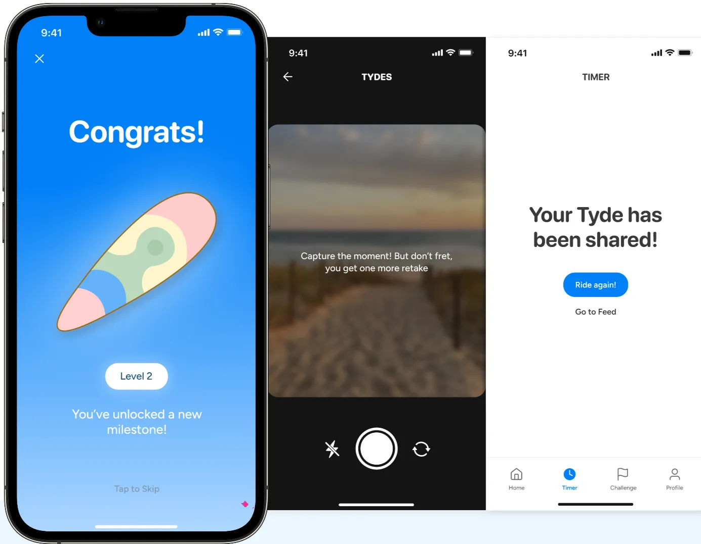
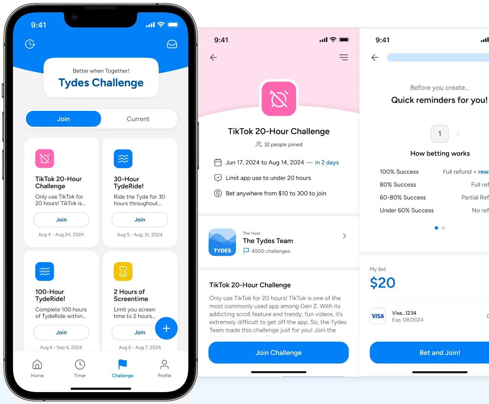
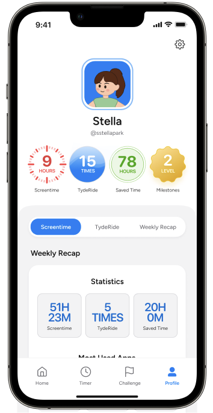
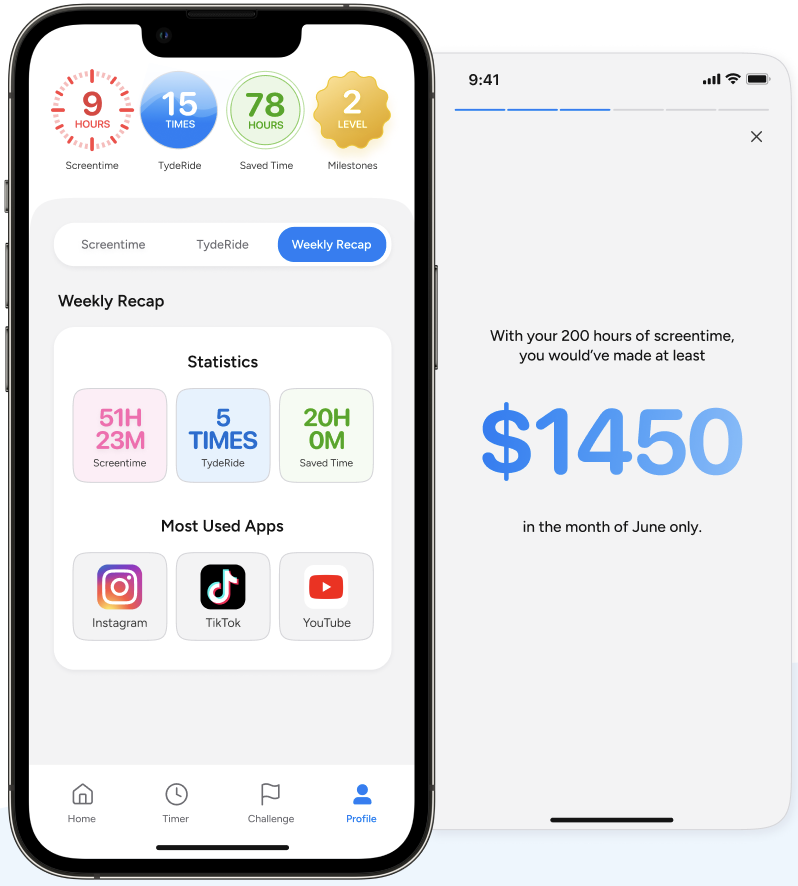
While our work culminated in a compelling MVP and investor pitch, there are several areas I’d explore further to continue growing Tydes as a product and ensure data-driven decision making:
This next phase would allow us to validate assumptions, uncover user preferences, and apply a rigorous, data-informed approach to guide both product and business decisions—exactly what excites me about working at the intersection of users, data, and strategy.
Building Tydes was my first experience creating a product from the ground up, starting from a blank page and shaping it all the way into a working MVP. It was both exciting and challenging to take an abstract problem regarding excessive screen time among Gen Z, and collaboratively mold it into a real, tangible solution that people could actually use. This process taught me that product development is not a linear journey; it’s a cycle of questioning, ideating, testing, and refining—again and again.
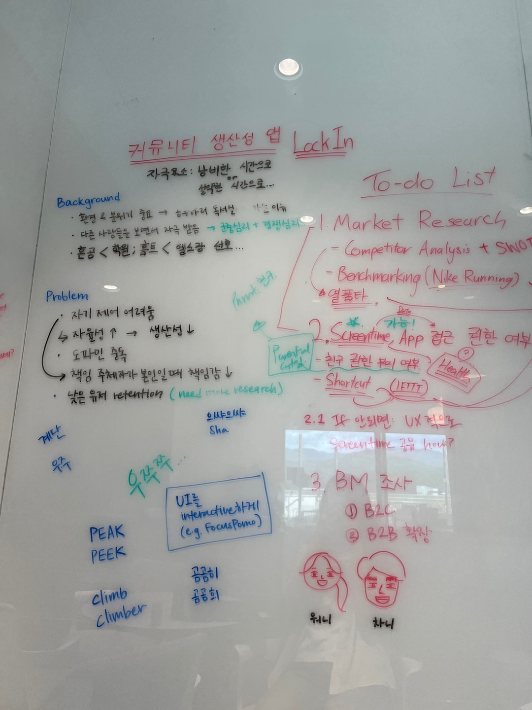
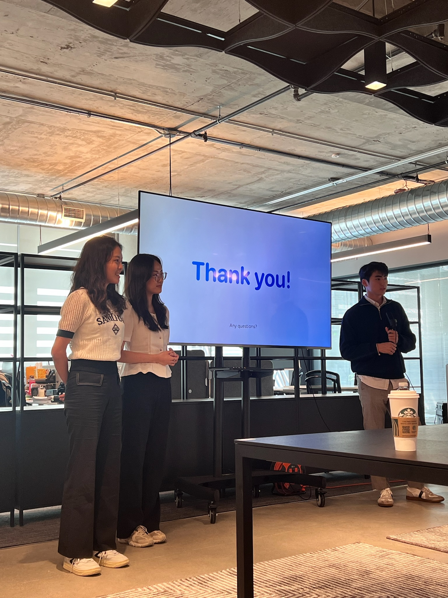
One of the most rewarding aspects was the constant collaboration with my teammates. We weren’t just dividing tasks; we were engaged in continuous dialogue, weighing trade-offs, rethinking decisions, and pushing each other to make the product more intuitive, impactful, and aligned with our values. That open line of communication was essential for navigating tough moments and reaching meaningful consensus.
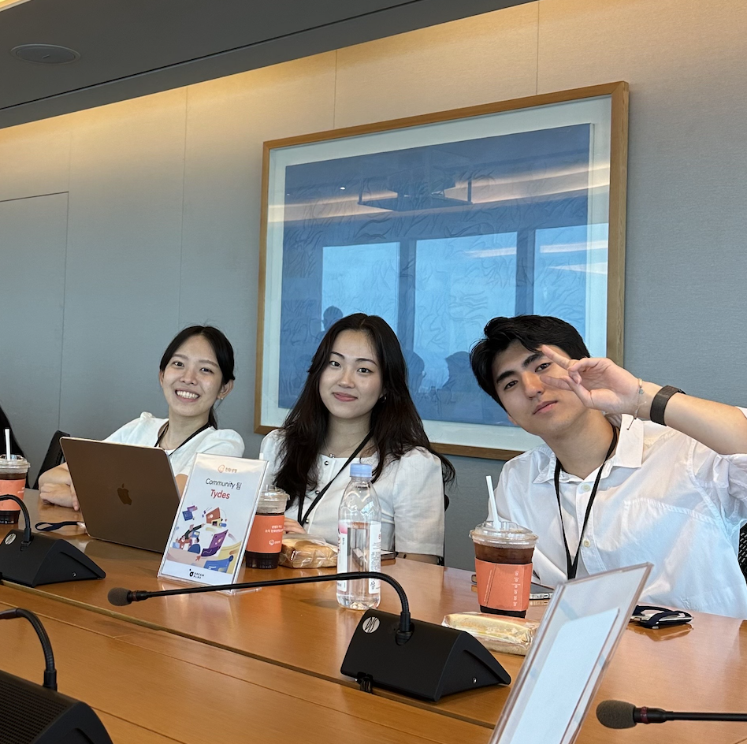
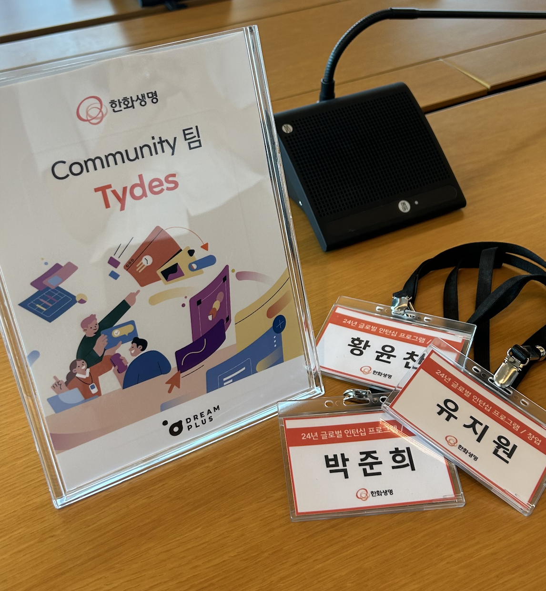
This project also introduced me to real-world product and project management workflows. We applied agile and Scrum methodologies to organize our work into sprints, sync regularly to assess progress, and prioritize features based on user impact and feasibility. Learning to implement these frameworks transformed the way I think about productivity and team alignment in fast-moving environments.
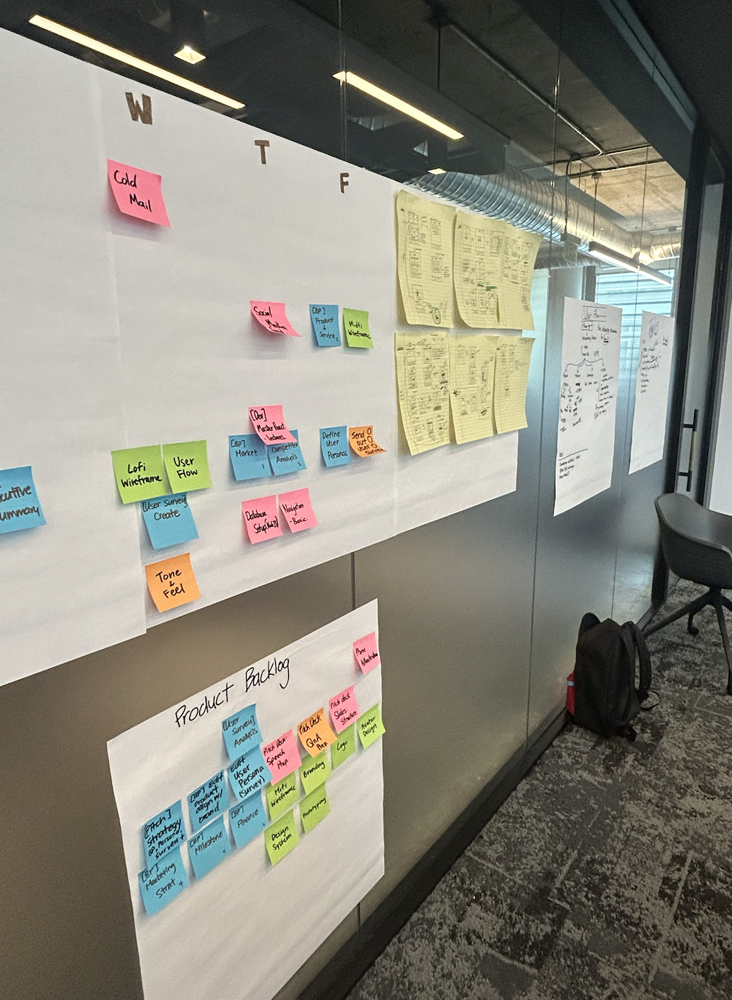
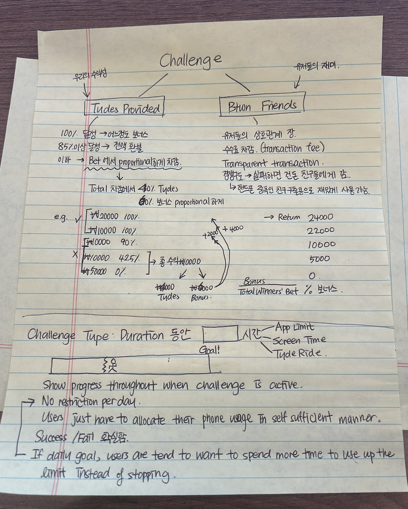
With the natural unstructured-ness that comes with early startup phases, I also got the chance to step into unfamiliar roles. One of the most unexpected but fun challenges was using Adobe Illustrator to design our surfer avatar system. Despite being a complete beginner with the tool and avatar creation, I found joy in the creative process and felt proud contributing to the visual identity of our product.
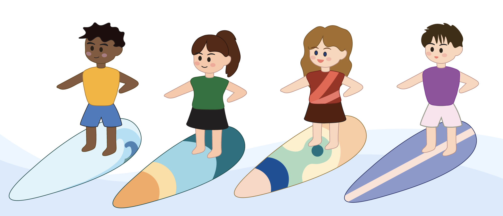
At its core, what I’m most proud of is how our team reframed digital discipline into something joyful and community-driven. Tydes isn’t about restriction—it’s about reclaiming time in a way that feels positive, human, and connected.
Furthermore, I want to express sincere gratitude to the Hanwha GIP 2024 Entrepreneurship team, our wonderful managers and mentors, and especially my incredible teammates on Tydes. Thank you for the trust, inspiration, and all the shared laughter along the way.
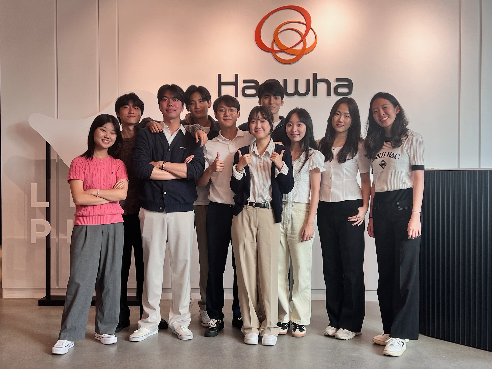